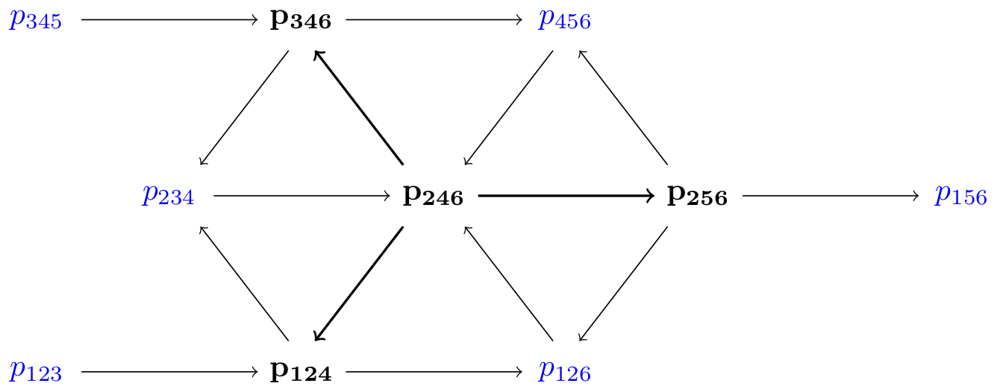

Instituto de Matemáticas UNAM Unidad Oaxaca
León 2, altos, Oaxaca de Juárez
Centro Histórico
68000 Oaxaca, Mexico.
Office: sede Martires de Tacubaya 505a
Email: lara (at) im.unam.mx
Universal coefficients for A3,6
The main result regarding the Grassmannian Gr(3,6) in our paper is that the quotient of
ℂ[t
1,...,t
16][p
123,...,p
456,X,Y] by the lifted ideal I
rex
is isomorphic to the cluster algebra A
3,6 endowed with
universal coefficients, called A
3,6univ.
We therefore proceed by explaining how to describe A
3,6univ using the
Quiver Mutation App.
A
3,6univ, just as A
3,6, is a cluster algebra of cluster type D
4 with the same 22 (mutable and frozen) cluster variables:
p
123, p
124, p
125, p
126, p
134, p
135, p
136, p
145, p
146, p
156,
p
234, p
235, p
236, p
245, p
246, p
256, p
345, p
346, p
356, p
456, X, Y.
Additionally, A
3,6univ has
coefficients: one for every
mutable cluster variable (so 16 in total).
For computations all we need is an initial seed for A
3,6univ and we obtain in using Reading's description of universal coefficients.
(This is equivalent to Fomin–Zelevinsky's original definition, but more handy for computations; see Reading's paper "Universal geometric cluster algebras" Math. Z. 277 (2014), no. 1-2, 499–547)
We start by choosing an initial quiver Q for A
3,6:

Then, we compute the g-vectors for all mutable cluster variables with respect to the opposite seed.
Every g-vector now corresponds to one coefficient and as we are in geometric type we can realize the coefficients as frozen directions.
The outcome is the quiver Q with 16 additional frozen vertices whose arrows are indicated by the g-vectors.
You can download the quiver here:
Quniv.
Note that this is in .qmu-format which can be opened directly in the
Quiver Mutation App.
The frozen variables numbered 1,...,16 correspond to the coefficients.
Using the x-variables function of the
Quiver Mutation App
one can now recursively verify that the exchange relations of A
3,6univ coincide with the lifts of exchange relations in A
3,6 (see
lifted relations).
The labelling of the coefficients is aligned with the labelling of the rays
here.